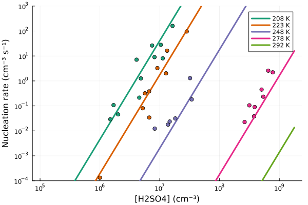
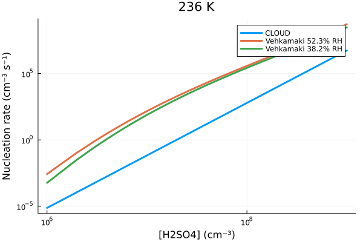
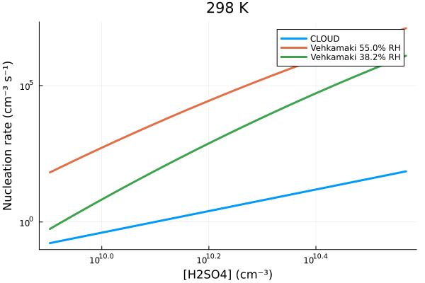
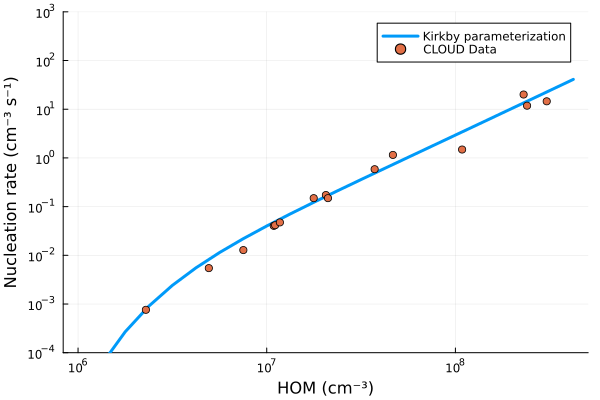
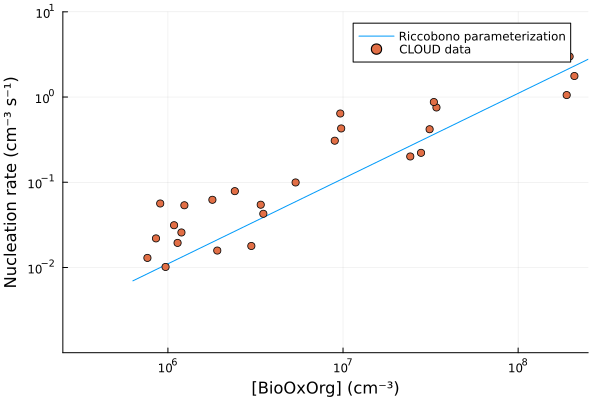
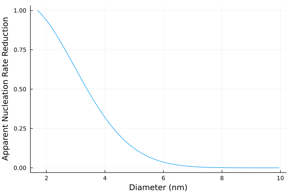

Aerosol Nucleation
Homogeneous aerosol nucleation describes the formation of aerosol particles from trace gases. The process occurs when the collisions and clustering of individual trace gas molecules outpace the cluster evaporation rate. It typically involves sulfuric acid, and is a significant source of ultrafine aerosol particles.
The Nucleation.jl module contains parameterizations of different nucleation paths:
- binary sulfuric acid - water nucleation, from [52],
- ternary sulfuric acid - water - ammonia nucleation, from [52],
- pure organic nucleation, from [53],
- organic with sulfuric acid nucleation, from [54].
The parameterizations are based on the CLOUD experiments at CERN and return nucleation rates for 1.7nm particles
In the below documentation we show the rates as described in the original papers with concentrations in units of $cm^{-3}$ (or additionally normalized by reference concentrations) and the nucleation rates in units of $cm^{-3} s^{-1}$. Our actual implementation uses only base SI units.
One of the highlights of CLOUD measurements is the incorporation of ion-induced nucleation. We can assume ion concentration is a prescribed function of height, but we still need to learn what would make a good prescribed profile.
Binary and ternary sulfuric acid nucleation
This is an implementation of [52], see Appendix sections 8-10 for details. $J_{H_2SO_4}$ is the binary $H_2SO_4-H_2O$ nucleation rate and $J_{H_2SO_4,NH_3}$ is the ternary $H_2SO_4-NH_3-H_2O$ nucleation rate:
\[J_{H_2SO_4} = k_{b,n}(T) \; [H_2SO_4]^{p_{b,n}} + k_{b,i}(T) \; [H_2SO_4]^{p_{b,i}} \; [n_{-}]\]
\[J_{H_2SO_4,NH_3} = k_{t,n}(T) \; f([H_2SO_4],[NH_3]) \; [H_2SO_4]^{p_{t,n}} + k_{t,i}(T) \; f([H_2SO_4],[NH_3]) \; [H_2SO_4]^{p_{t,i}} \; [n_{-}]\]
where:
- $[\cdot]$ denotes the concentration,
- $k_{x,y}$ is an empirical function of temperature $T$,
- $f_{y}$ is an empirical function of $[H_2SO_4]$ and $[NH_3]$.
\[ln \; k_{x,y}(T) = u_{x,y} - exp\left(v_{x,y}\left[\frac{T}{1000}-w_{x,y}\right]\right)\]
\[f_y([H_2SO_4],[NH_3]) = \frac{[NH_3]}{a_y + \frac{[H_2SO_4]^{p_{t,y}}}{[NH_3]^{p_{A,y}}}}\]
The values of free parameters $p$, $u$, $v$, $w$, and $a$ are defined in [52].
Example plots
Below figure reproduces results from [52] without negative ion concentrations.
include("plots/CLOUD_Nucleation_Plots.jl")"CLOUD_nucleation.svg"
[55] is a commonly used parameterization of binary $H_{2}SO_{4}-H_{2}O$ nucleation. The parameterization is a fit to the theoretical nucleation rate and includes the effects of relative humidity. Below we show a comparison between the Vehkamaki et al 2002 parameterization and the Dunne et al 2016 parameterization for two relative humidities.
include("plots/compare_vehkamaki_CLOUD_nucleation.jl")"CLOUD_Vehk_comparison_236.svg" 
Pure organic nucleation
Pure organic nucleation is parameterized based on [53]. The $J_{org}$ is the organic nucleation rate given by:
\[J_{org} = J_{n,org} + J_{i,org} = a_1 \; [HOM]^{a_2 + a_5/[HOM]} + a_3 \; [HOM]^{a_4 + a_5/[HOM]} \; [n_{\pm}]\]
where:
- $[HOM]$ is the concentration of highly oxygenated organic molecules from monoterpene (MT) oxidation,
- $[n_{\pm}]$is the ion concentration.
The $[HOM]$ is parameterized as:
\[[HOM] = \frac{Y_{MT,O_3} \; k_{MT,O_3} \; [MT] \; [O_3] + Y_{MT,OH} \; k_{MT,OH} \; [MT] \; [OH] } {CS}\]
where:
- $Y_{MT,O_3}$, $Y_{MT,OH}$ are the HOM yields from MT oxidation with $O_3$ and $OH$ radicals in the CLOUD chamber respectively,
- $[MT]$ is the monoterpene concentration,
- $CS$ is the condensation sink ($s^{-1}$).
The $k_{MT,O_3}$ $k_{MT,OH}$ are functions of temperature T given by:
\[k_{MT,O_3} = 8.05 \; 10^{-16} \; exp(444/T) \\ k_{MT,OH} = 1.2 \; 10^{-11} \; exp(444/T)\]
Example plots
include("plots/Kirkby_organic_nucleation_plots.jl")"Kirkby_organic_nucleation.svg"
Nucleation of organics with sulfuric acid
This parameterization is given by [54]. The nucleation rate $J_{H_2SO_4,org}$ is given by:
\[J_{H_2SO_4,org}= 0.5 \; k_{H_2SO_4,org} \; [H_2SO_4]^2 \; [BioOxOrg]\]
where:
- [H2SO4] is the sulfuric acid concentration,
- [BioOxOrg] is the concentration of highly oxygenated organic molecules.
BioOxOrg is a proxy for HOM, but represents a different group of compounds from HOM, due to different measurement techniques. An empirical derivation is given by:
\[[BioOxOrg] = \frac{k_{MT,OH} \; [MT] \; [OH]}{CS}\]
Example plots
Below is a plot reproducing the results from [54], with a constant H_2SO_4 concentration of `2.6e6 cm\^{-3}.
include("plots/Riccobono_mixed_nucleation_plots.jl")"Riccobono_nucleation.svg"
Apparent nucleation rate
It can happen that the parameterized nucleation rate is defined for aerosol particles that are too small to be represented in an aerosol module. The apparent nucleation rate parameterization takes into account the growth rate due to condensation, and sink terms to coagulation and outputs the nucleation rate at a larger aerosol particle size. The parameterization is based on [56].
The apparent nucleation rate $J_x$ at diameter $d_x$ is given by:
\[J_x = J_1 \; exp\left(-\gamma \; d_1 \; \frac{CG(d_1)}{GR}\right)\]
where:
- $J_1$ is the nucleation rate at diameter $d_1$,
- $CG(d_1)$ is the coagulation rate at diameter $d_1$,
- $GR$ is the growth rate by condensation.
The parameter $\gamma$ is parameterized as:
\[\gamma = \frac{1}{m + 1} \; \left[\left(\frac{d_x}{d_1}\right)^{(m + 1)} - 1\right]\]
where:
- $m$ can be prescribed as a constant value between -1.5 and -1.9 or computed as
\[m = \frac{log(CG(d_x) / CG(d_1))}{(log(d_x / d_1)}\]
Example plots
include("plots/lehtinen_apparent_nucleation_rate.jl")"/home/runner/work/CloudMicrophysics.jl/CloudMicrophysics.jl/docs/build/apparent_nucleation.svg"